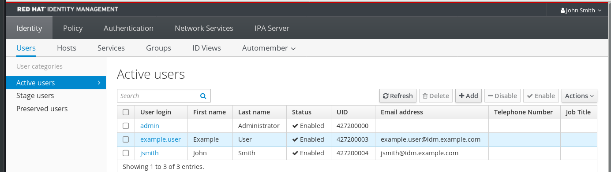
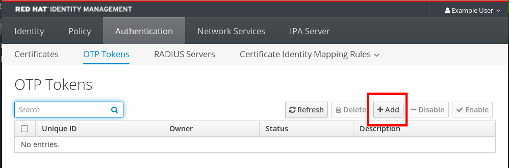
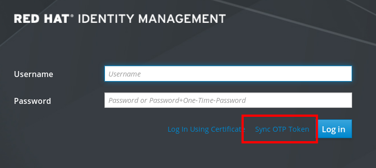
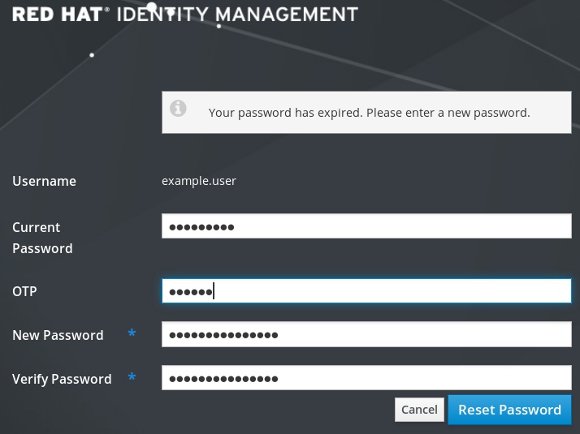

Access to IdM Web UI can be secured using several methods. The basic one is password authentication.
To increase the security of password authentication, you can add a second step and require automatically generated one-time passwords (OTPs). The most common usage is to combine password connected with the user account and a time limited one time password generated by a hardware or software token.
The following sections help you to:
- Understand how the OTP authentication works in IdM.
- Configure OTP authentication on the IdM server.
- Create OTP tokens and synchronize them with the FreeOTP app in your phone.
- Authenticate to the IdM Web UI with the combination of user password and one time password.
- Re-synchronize tokens in the Web UI.
One-time passwords bring an additional step to your authentication security. The authentication uses your password + an automatically generated one time password.
To generate one time passwords, you can use a hardware or software token. IdM supports both software and hardware tokens.
Identity Management supports the following two standard OTP mechanisms:
- The HMAC-Based One-Time Password (HOTP) algorithm is based on a counter. HMAC stands for Hashed Message Authentication Code.
- The Time-Based One-Time Password (TOTP) algorithm is an extension of HOTP to support time-based moving factor.
Important
IdM does not support OTP logins for Active Directory trust users.
The IdM Web UI allows you to configure hardware or software device to generate one-time passwords.
The one time password is entered just after the usual password in the dedicated field in the login dialog.
Only administrators can enable OTP authentication in the user settings.
Prerequisites
- Administration privileges
Procedure
- Log in to the IdM Web UI with your username and password.
Open the Identity → Users → Active users tab.

- Click your username to open the user settings.
- In the User authentication types, select Two factor authentication (password + OTP).
- Click Save.
At this point, the OTP authentication is enabled on the IdM server.
Now you or users themselves need to assign a new token ID to the user account.
The following section helps you to add token to the IdM Web UI and to your software token generator.
Prerequisites
- Active user account on the IdM server.
- Administrator has enabled OTP for the particular user account in the IdM Web UI.
- A software device generating OTP tokens, for example FreeOTP.
Procedure
- Log in to the IdM Web UI with your user name and password.
- To create the token in your mobile phone, open the Authentication → OTP Tokens tab.
Click Add.

In the Add OTP token dialog box, leave everything unfilled and click Add.
At this stage, the IdM server creates a token with default parameters at the server and opens a page with a QR code.
- Copy the QR code into your mobile phone.
- Click OK to close the QR code.
Now you can generate one time passwords and log in with them to the IdM Web UI.

This procedure describes the first login into the IdM Web UI using a one time password (OTP).
Prerequisites
OTP configuration enabled on the Identity Management server for the user account you are using for the OTP authentication. Administrators as well as users themselves can enable OTP.
To enable the OTP configuration, see the section called “Enabling the one time password in the Web UI”
- A hardware or software device generating OTP tokens configured.
Procedure
- In the Identity Management login screen, enter your user name or a user name of the IdM server adminisntrator account.
- Add the password for the user name entered above.
- Generate a one time password on your device.
- Enter the one time password right after the password (without space).
Click Log in.
If the authentication fails, synchronize OTP tokens.
If your CA uses a self-signed certificate, the browser issues a warning. Check the certificate and accept the security exception to proceed with the login.
If the the IdM Web UI does not open, verify the DNS configuration of your Identity Management server.
After successful login, the IdM Web UI appears.

If the login with OTP (One Time Password) fails, OTP tokens are not synchronized correctly.
The following text describes token re-synchronization.
Prerequisites
- A login screen opened.
- A device generating OTP tokens configured.
Procedure
On the IdM Web UI login screen, click Sync OTP Token.

- In the login screen, enter your username and the Identity Management password.
- Generate one time password and enter it in the First OTP field.
- Generate another one time password and enter it in the Second OTP field.
Optionally, enter the token ID.

- Click Sync OTP Token.
After the successful synchronization, you can log in to the IdM server.
Administrators of Identity Management can enforce you having to change your password at the next login. It means that you cannot successfully log in to the IdM Web UI until you change the password.
Password expiration can happen during your first login to the Web UI.
If the expiration password dialog appears, follow the instructions in the procedure.
Prerequisites
- A login screen opened.
- Active account to the IdM server.
Procedure
- In the password expiration login screen, enter the user name.
- Add the password for the user name entered above.
In the OTP field, generate a one time password, if you use the one time password authentication.
If you do not have enabled the OTP authentication, leave the field empty.
- Enter the new password twice for verification.
Click Reset Password.

After the successful password change, the usual login dialog displays. Log in with the new password.